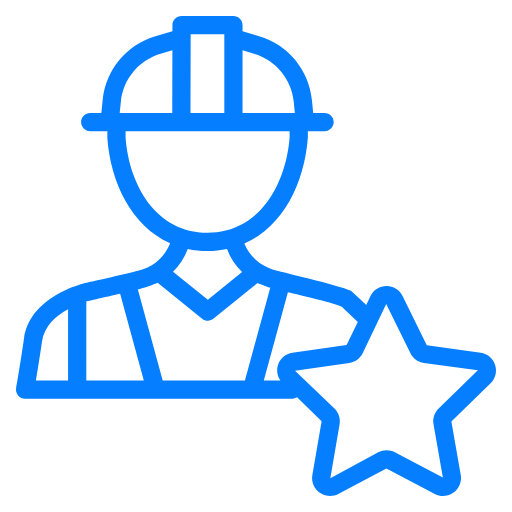
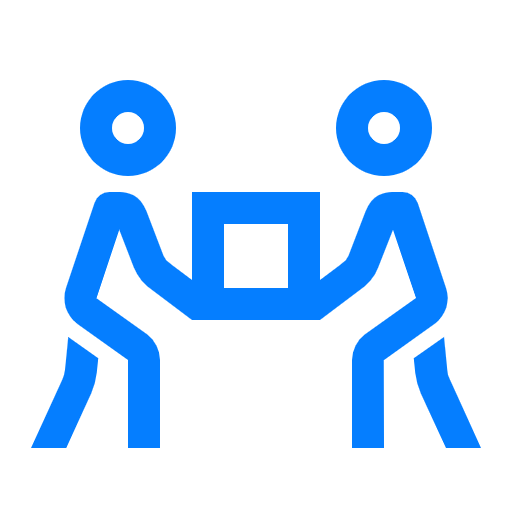
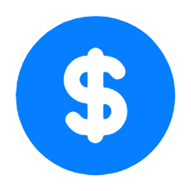
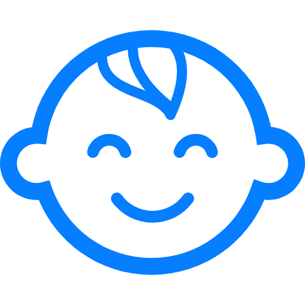

Quem Somos
A Mãos que Ajudam é uma ONG dedicada a conectar pessoas dispostas a doar tempo e recursos a causas sociais que precisam de apoio.
Nossa Missão
Transformar comunidades através do voluntariado e da solidariedade.
Nossos Valores
- Solidariedade
- Transparência
- Impacto social
- Colaboração

Como Ser Voluntário
Oferecemos diversas oportunidades de voluntariado para todos os perfis e disponibilidades.
Áreas de Atuação
- Educação
- Saúde
- Meio ambiente
- Assistência social
Requisitos e Inscrição
Para se inscrever, basta preencher o formulário online.

Como Doar
Sua doação nos ajuda a manter nossas campanhas e ampliar o impacto social.
Campanhas Ativas
Campanha do Agasalho 2026
Arrecadação de roupas para famílias em situação de vulnerabilidade.
Natal Solidário
Distribuição de cestas básicas e brinquedos para crianças.
Educação para Todos
Apoio a projetos de reforço escolar e inclusão digital.
Formas de Doação

Pix
doacoes@maosqueajudam.org
Transparência
Publicamos relatórios trimestrais com a prestação de contas de todas as doações recebidas.
Nosso Impacto

Em 2025, impactamos mais de 5.000 pessoas em 12 comunidades, com a ajuda de 300 voluntários ativos.
Contato
Entre em contato para saber mais sobre como participar:
Ou preencha o formulário de cadastro.